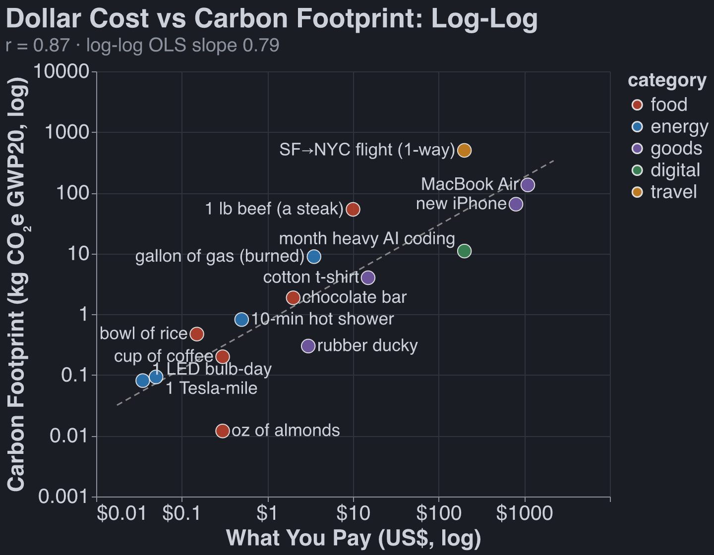
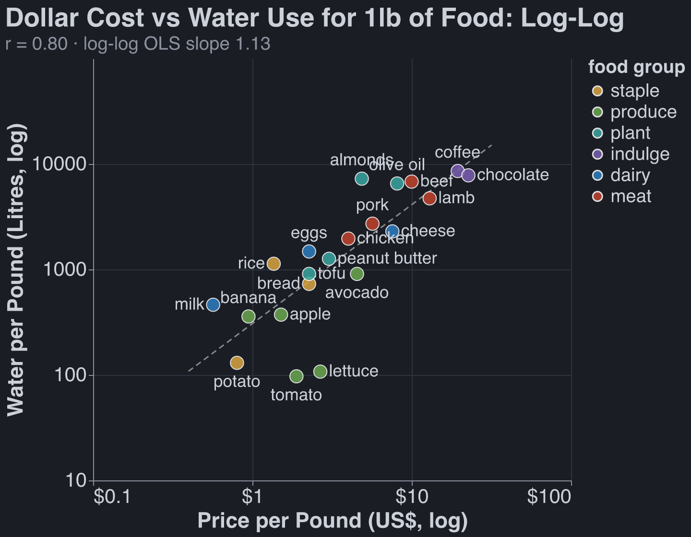
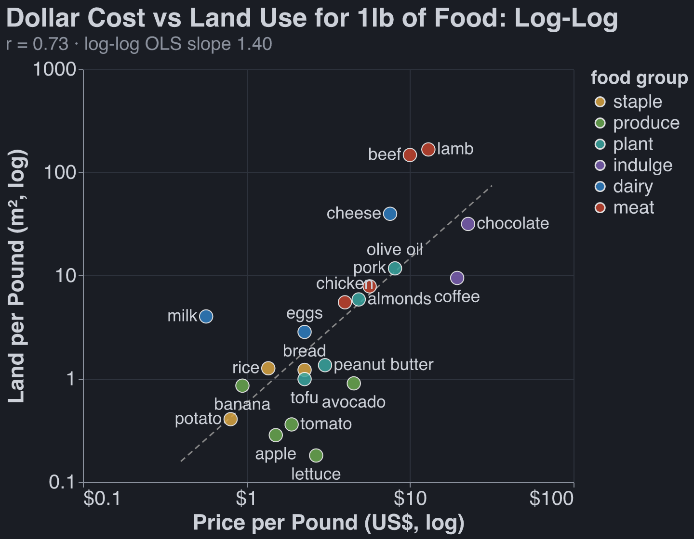
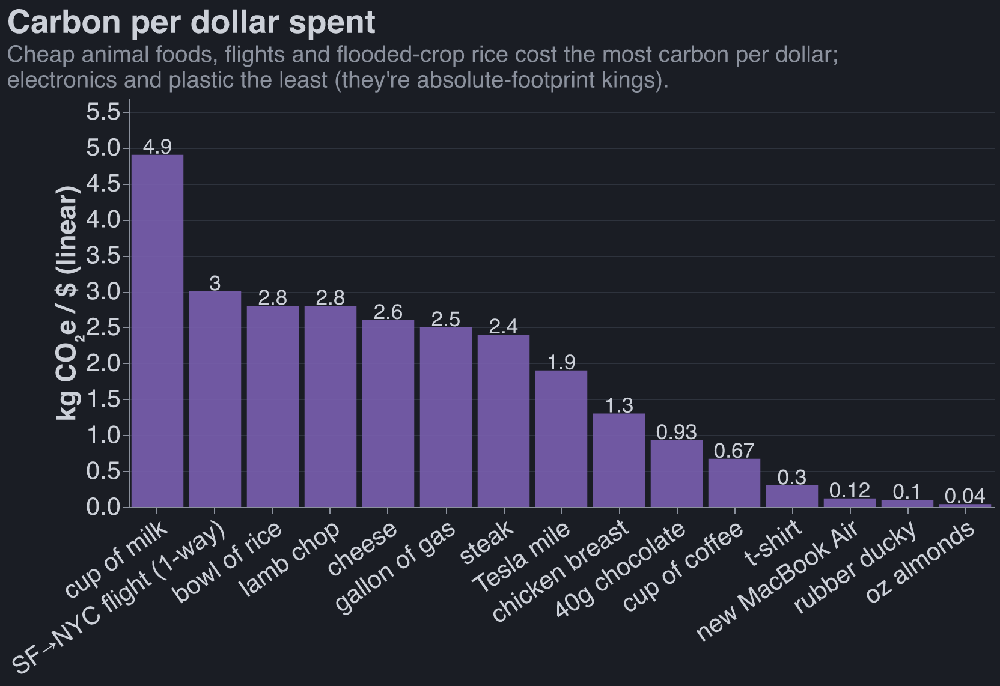
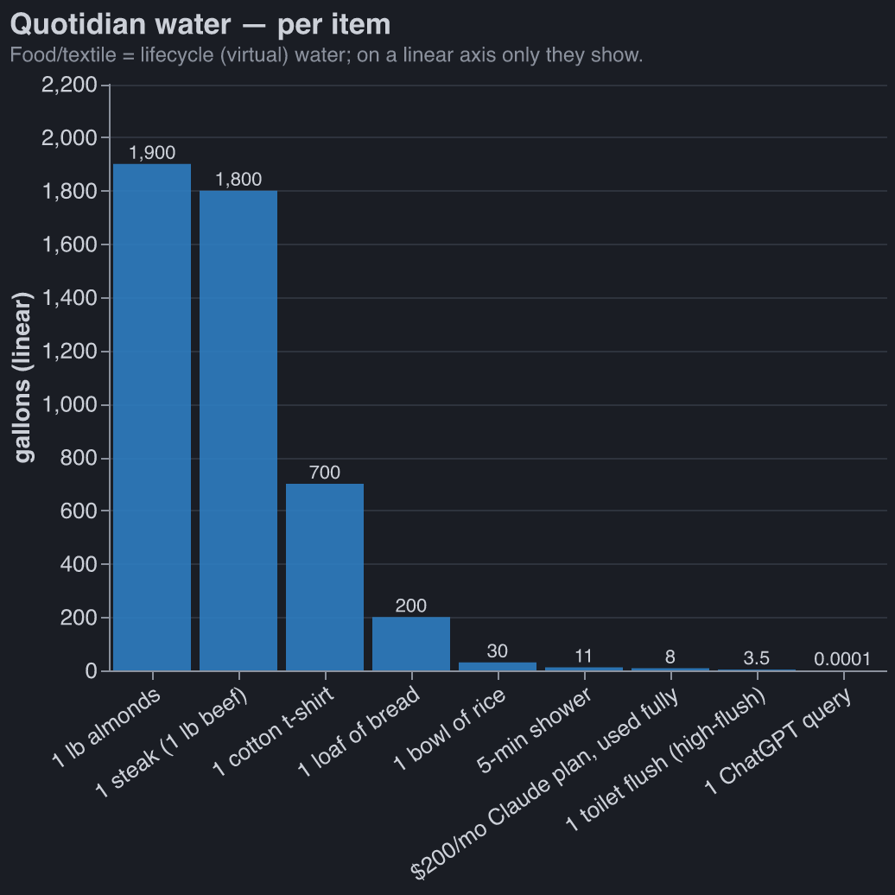
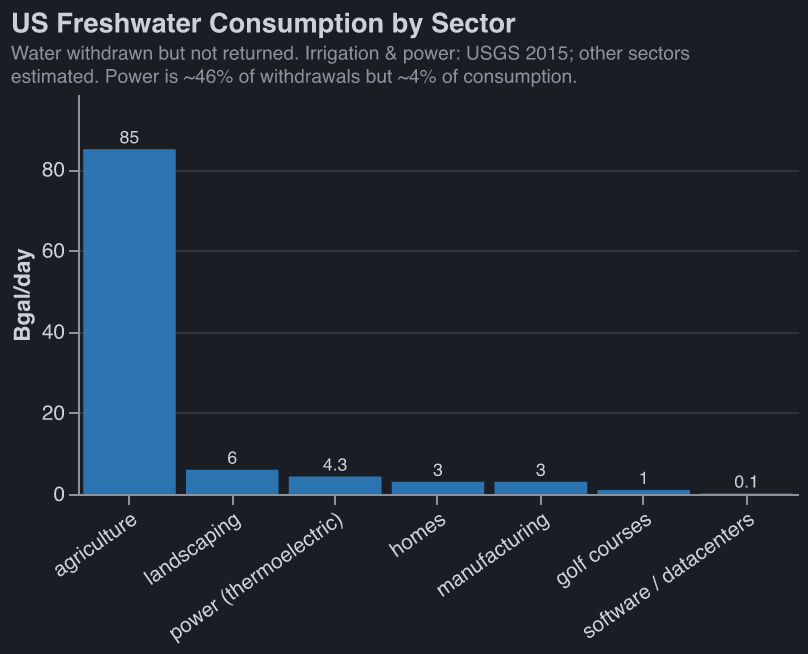
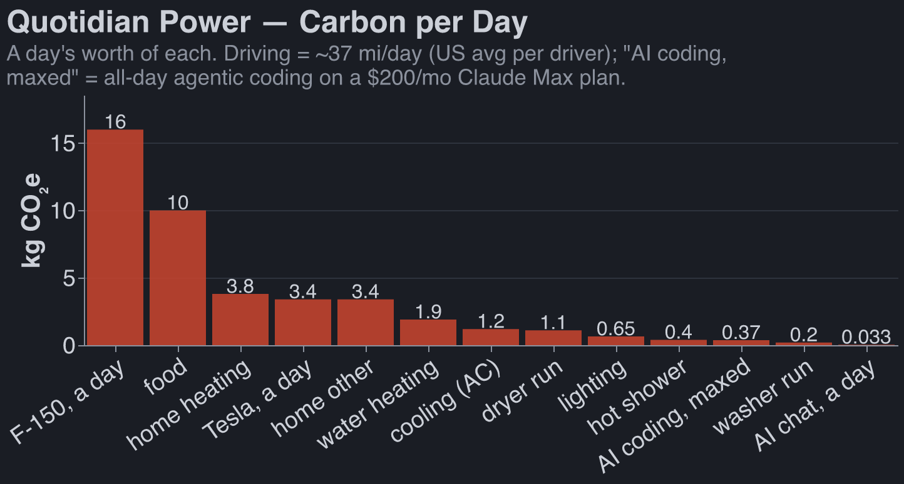
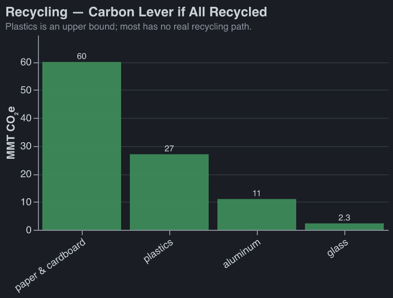
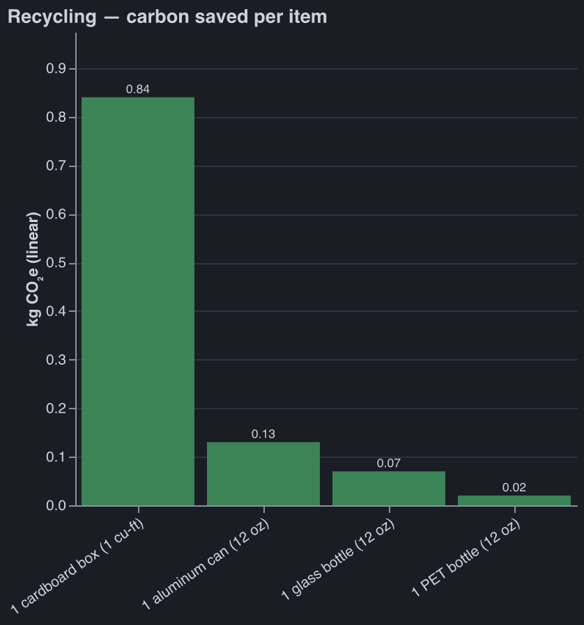

Plastic Straws
Stop Worrying About Your Consumption Habits
Published Last edited
Many people before me have dunked on the plastic-straw Nazis. From a utilitarian perspective, using a paper straw is pointless. [1]
In the post-singularity utopia, we will price externalities, and no one (besides the externality-pricers) will have to think about their consumption beyond its direct economic cost. Today, I do think about some things, like how the food I eat affects animal welfare. This post is my attempt to think about fewer of them.
TLDR - These are worth zero mental energy:
- Reducing, reusing, recycing, and composting
- Eating organic, eating local
- Water use, outside of that caused by food
- Most labels that tries to convince you a product is ethical
I: Methodology #
Lazy Research #
Claude found all of the numbers for this article. I strongly believe in the power of working with approximately correct numbers when the counterfactual is no numbers.
Animal Welfare #
I think this is much more important than anything mentioned in this post. I discuss my thoughts on diet here.
Global Warming #
From my inside view, my carbon footprint is irrelevant. It’s likely we get something singularity-like in the next 20 years. Under this assumption, most effort to reduce emissions are better spent on global health or x-risk. Out of epistemic humility, I still try to reduce my carbon footprint.
This post uses GWP20 . It measures how much warming something will cause over the next 20 years, normalized to 1 ton of . You can then put other things on the same scale: a ton of methane is ~80 tons , a flight from SF to NYC is ~2-3 tons .[2]
It’s convention to use GWP100. I am using GWP20[3] because interest rates are real and my model of the world accounts for them.[4]
Land Use, Water Use #
These things matter, and I tried to quantify how your decisions affect each. But in my heart of hearts, I don’t think you should spend much energy optimizing for either. We should make (a lot more!) national parks and then price and tax land.[5] And we should definitely make farmers pay for water, though I’m not holding my breath on that one.
II: You Can Safely Stop Worrying About… #
Reducing, Reusing, Recycling, Composting #
Each year Americans send about 243 million cubic yards of trash to landfill, which means we must create ~1,500 acres of dumps (at 100 ft deep).
After 100 years a landfill gets covered and becomes a park, a golf course, a conservation area, or a solar farm. Assume, conservatively[6], that one acre of new landfill is as bad as 100 acres of farmland.
The average American’s annual landfill use is about 20 cubic feet, or of landfill area. It takes ~1,590 sq ft to create a 1-lb steak, so your year of trash is steaks, even after the 100x penalty.
No one has done a rigorous study showing that microplastics meaningfully impact health. Even if you are worried about them, vanishingly little exposure comes from plastic that properly makes it to landfill.
Warming is also negligible here: The average American’s landfill methane emissions is ~0.53 t , or about 1/5 of SF↔NYC round-trip flights.[7]
If you do anything here, recycle your aluminum and cardboard (see section III).
Organic Foods #
I am not convinced that organic food creates fewer externalities than normal produce. It might be worse:
- Land: Organic yields run ~20-25% lower, so growing the same amount of food takes ~25-33% more farmland.
- Banning GMOs makes the land problem worse: Organic prohibits GMOs. GM crops raise yields.[8]
- Organic still uses pesticides: Organic bans synthetic pesticides but allows a long list of “natural” ones: copper (a heavy metal that never degrades and builds up in soil), sulfur, and pyrethrin (toxic to bees and fish).
- More tillage: No synthetic herbicides means more plowing for weeds, which causes erosion and emissions (from tractors and directly from the soil).
I asked Claude for reasons why Organic farming is better, but it didn’t come up with much:
- Fewer synthetic pesticides sprayed: Organic bans synthetic pesticides and synthetic nitrogen fertilizer outright (and roughly halves cadmium), cutting the synthetic load on soil and water. The catch is above: it leans on natural pesticides like copper and sulfur instead.
- Farmworker pesticide exposure: Conventional US farms spray ~1 billion lb of synthetic pesticides a year, and globally acute pesticide poisoning hits an estimated tens of millions of farmworkers a year (mostly poor-PPE, developing-world farms). Organic farming doesn’t necessarily improve this situation. Sulfur, the primary organic fungicide, is California’s most-used pesticide and is tied to more illness cases there than any other.
- Biodiversity per acre: Organic fields hold ~30% more species and ~50% more animals. But they need ~30% more land per calorie grown, so you gain ~nothing.
Buying Local #
Shipping food in a container on a cargo ship is basically free, economically and from a carbon perspective. In many cases it’s much more environmentally friendly to just ship stuff from where it grows easily.[9] [10]
Most Labels on Consumables (eg no bycatch, FSC certified wood) #
Possibly Worthwhile: #
- Energy Star: Its appliances saved ~520 billion kWh in 2020 (~400 Mt the annual power of ~50M homes).
- Certain Animal Welfare Labels: Claude recommends Animal Welfare Approved, Certified Humane, Global Animal Partnership, and USDA Organic.[11] The tell is a third party auditing the farm: the Animal Welfare Institute found >80% of USDA-approved “animal-raising” claims had no supporting evidence beyond the producer’s own word.
- FSC wood: A 2024 Nature study found more wildlife in FSC forests, but Greenpeace quit FSC in 2018, calling it greenwashing.
Pointless: #
- Rainforest Alliance: the premium that reaches the farmer is under a penny per chocolate bar.
- Fairtrade: a little more (~1–2¢/bar), but it goes to the co-op, not the farmer.
- “No bycatch” / seafood labels in general: each one fixes a single narrow thing and leaks the harm elsewhere.[12]
- Many Animal Welfare Labels: “Natural” on eggs / meat (meaningless); “No Hormones” on meat (this is banned anyway); “Vegetarian-fed poultry” (chickens are omnivores).
III: Too Much Data #
Price Is a Good Proxy #
Carbon costs correlate with dollar costs, r = 0.87. If you budget your spending, to some extent you’re already optimizing for reducing externalities.

Prices: US consumer, ~1 sig fig. Carbon footprints: Poore & Nemecek 2018 for food, EPA eGRID plus per-mile and per-flight LCAs for the rest.
This is also somewhat true of land and water use. Graphs for food in particular:

Prices: US consumer. Water use: Mekonnen & Hoekstra total water footprints.

Prices: US consumer. Land use: Poore & Nemecek 2018.
Looked at another way: carbon footprint per dollar spent does span two OOMs. This viewpoint is less comforting.

Carbon from Poore & Nemecek 2018 and EPA eGRID, divided by US consumer prices.
Quotidian Water Use #
The only thing that matters here is what you eat. Definitely don’t feel guilty about taking a long shower.

Food water: Mekonnen & Hoekstra. AI water: Altman 2025.
Agriculture is ~80–90% of US water consumption.[13]

USGS Circular 1441, 2015 US water use; smaller sectors estimated from withdrawals.
Quotidian Power Use #
There were no big surprises for me here. Driving is expensive. AI can use a lot of power, but only if you’re coding with it. A whole day of lighting is one mile in a truck, @mom.

Grid carbon: EPA eGRID 2022. Home end-use split: EIA RECS 2020. AI energy: Epoch AI, Altman 2025.
Recycling #
People will pay for recycled cardboard and aluminum, whereas recycled plastic and glass is mostly only used because of mandates or to please consumers.

US EPA — Advancing Sustainable Materials Management, 2018 figures.
Per item:

Per-item deltas from US EPA MSW data and manufacturing LCAs.
Notes
My plausible explanations are innumeracy or costly signaling/symbolism (see The Toxoplasma of Rage). ↩︎
Much more than you’d think considering that only ~1 ton of is emitted! Physicists think that atmospheric contrails caused by planes have a large warming effect. ↩︎
Methane (from trash or cows) is ~3x less when using GWP100. ↩︎
The price of treasuries suggests that $1 today is worth 39¢ in 2046 and ~0.6¢ in 2126. ↩︎
It’s very generous to the anti-trash side to say that creating an acre of landfill is as bad as creating 100 acres of farmland: discount rates imply that one year of landfill in 2126 is as bad as one year of landfill in 2026. And farmland is fertile land that would counterfactually be biodiverse nature, which is not true of landfill. ↩︎
In the US, these methane emissions are captured anyway! ↩︎
Corn ~11%, soy ~5%, cotton ~19%. ↩︎
Some supermarkets will fly in produce, but I don’t know any heuristics for telling what has been flown (and not trucked or cargo-shipped). Apparently sometimes even asparagus gets flown! Avoid sashimi-grade fish from afar and berries with an insane price markup, I guess. ↩︎
Illustrative example: in the 90s Saudi Arabia decided it wanted food autarky, and pumped ~5.5 trillion gallons of water per year (at the peak in 1992) out of non-renewable aquifers to grow wheat in the desert. ↩︎
Animal Welfare Approved is the gold standard — independent auditors visit every farm yearly, and it’s the only label Consumer Reports rated “excellent.” Certified Humane is 100% pass/fail, on-site audited. Global Animal Partnership is Whole Foods’ 1–5+ steps (higher = better). USDA Organic means real audits and required outdoor access. ↩︎
Dolphin-safe is the template: spare the cute mammal, push boats onto nets that kill sharks and juvenile tuna instead. “Sustainable” (MSC) only certifies that the target stock won’t collapse — nothing about bycatch, a bottom-trawled seafloor, or the fish’s suffering. “No bycatch,” “natural,” and “eco” are unregulated marketing with no audit behind them. The only semi-trustworthy signal isn’t a logo but Seafood Watch (Monterey Bay Aquarium): independent, and it rates the actual species, gear, and region you’re buying. ↩︎
Consumption is water withdrawn and not returned — evaporated by crops, cooling towers, and lawns — as opposed to withdrawals, most of which flow back to the river. Power is the headline case: ~46% of US withdrawals but only ~4% of consumption, because it borrows cooling water and returns ~97% of it. Irrigation and thermoelectric figures are USGS Estimated Use of Water in the United States in 2015 (Circular 1441); the other bars are estimated from withdrawals × typical return rates, so read the small ones as order-of-magnitude. The data is stale by necessity: USGS reported consumption for every sector from 1960–1995, then dropped it after the 1995 report due to budget and staffing cuts. Consumption can’t be metered at a pipe the way a withdrawal can; it has to be modeled from evapotranspiration and process losses. Only irrigation and power consumption were revived in 2015. ↩︎
Sources
Claude found these sources. Robbie did not review them.
- IPCC AR6 WGI (2021), Ch. 7 Table 7.15 — methane’s 20-year GWP is ~80 (79.7–82.5× CO₂). https://www.ipcc.ch/report/ar6/wg1/chapter/chapter-7/ ↩︎
- Per-passenger flight CO₂ is ~0.15–0.25 kg/km (Our World in Data, Ritchie 2023), so a ~4,100 km SF–NYC leg is ~0.6–1 t CO₂; contrail and non-CO₂ forcing add roughly 2–3× on a 20-year horizon (Resources for the Future, “Contrails, Aviation, and Climate Change,” 2023). https://ourworldindata.org/travel-carbon-footprint https://www.rff.org/publications/issue-briefs/contrails-aviation-and-climate-change/ ↩︎
- US EPA, “National Overview: Facts and Figures on Materials, Wastes and Recycling” (2018 data) — 146 million tons of MSW landfilled (the cubic-yard volume is derived from tonnage). https://www.epa.gov/facts-and-figures-about-materials-waste-and-recycling/national-overview-facts-and-figures-materials ↩︎
- Beef land use ≈ 326 m²/kg live weight (~1,590 sq ft/lb), from Poore & Nemecek (2018), “Reducing food’s environmental impacts through producers and consumers,” Science 360(6392), via Our World in Data. https://ourworldindata.org/environmental-impacts-of-food ↩︎
- Seufert, Ramankutty & Foley (2012), “Comparing the yields of organic and conventional agriculture,” Nature 485:229–232 — organic yields ~25% lower (de Ponti et al. 2012 found ~20%). https://www.nature.com/articles/nature11069 ↩︎
- Klümper & Qaim (2014), “A Meta-Analysis of the Impacts of Genetically Modified Crops,” PLOS ONE 9(11):e111629 — GM adoption raised crop yields ~22% on average. https://journals.plos.org/plosone/article?id=10.1371/journal.pone.0111629 ↩︎
- Barański et al. (2014), “Higher antioxidant and lower cadmium concentrations… in organically grown crops,” British Journal of Nutrition 112:794–811 — organic crops averaged ~48% lower cadmium. https://doi.org/10.1017/S0007114514001366 ↩︎
- US EPA, “Pesticides Industry Sales and Usage: 2008–2012 Market Estimates” — US agriculture used ~0.9 billion lb of pesticide active ingredients (2012), of ~1.1 billion lb total US. https://www.epa.gov/sites/default/files/2017-01/documents/pesticides-industry-sales-usage-2016_0.pdf ↩︎
- Jeyaratnam (1990), “Acute pesticide poisoning: a major global health problem,” World Health Statistics Quarterly 43(3):139–144 — WHO estimate that ~25 million agricultural workers in the developing world suffer a poisoning episode each year. https://iris.who.int/handle/10665/51746 ↩︎
- Raanan et al. (2017), Environmental Health Perspectives 125(8) — elemental sulfur is California’s most-used agricultural pesticide and is tied to more occupational-illness cases (1,698 in 1982–1995) than any other. https://www.ncbi.nlm.nih.gov/pmc/articles/PMC5783654/ ↩︎
- Tuck et al. (2014), “Land-use intensity and the effects of organic farming on biodiversity,” Journal of Applied Ecology 51:746–755 (species richness ~30%); the ~50% greater abundance is from Bengtsson et al. (2005). https://besjournals.onlinelibrary.wiley.com/doi/abs/10.1111/1365-2664.12219 ↩︎
- Saudi wheat output peaked at ~4 million tonnes in 1992 (the world’s 6th-largest exporter that year), the flagship of a desert-farming push that at its height drew up to ~21 km³ (~5.5 trillion US gallons) of fossil groundwater a year — roughly four-fifths of that non-renewable reserve is now gone. National Geographic, “Saudi Arabia’s Great Thirst.” https://www.nationalgeographic.com/environment/article/saudi-arabia-water-use ↩︎
- US EPA/DOE, ENERGY STAR “Impacts” (2020 accomplishments) — 520 billion kWh saved and 400 million metric tons of GHG avoided in 2020. https://www.energystar.gov/about/impacts ↩︎
- Animal Welfare Institute, “Label Confusion” (Fall 2022 update) — 85% of reviewed USDA-approved animal-raising label claims lacked meaningful substantiation. https://awionline.org/awi-quarterly/fall-2022/animal-welfare-label-claims-usda-does-little-deter-deception ↩︎
- Zwerts et al. (2024), “FSC-certified forest management benefits large mammals compared to non-FSC,” Nature 628:563–568 — 2.5–2.7× more large mammals in FSC concessions (Gabon/Congo). https://www.nature.com/articles/s41586-024-07257-8 ↩︎
- Greenpeace International (26 Mar 2018), “Greenpeace International to not renew FSC membership.” https://www.greenpeace.org/international/press-release/15589/greenpeace-international-to-not-renew-fsc-membership/ ↩︎
- Fairtrade International cocoa Premium is US$240/tonne (≈0.5–1.5¢ per bar), paid to the producer co-op to invest collectively — not to the individual farmer. https://www.fairtrade.net/en/get-involved/news/new-fairtrade-minimum-price-for-cocoa-in-non-regulated-markets.html ↩︎
- Poore & Nemecek (2018), Science, via Our World in Data food-footprint data: beef ~60 kg CO₂e/kg (mean up to ~99) vs bread/wheat ~1.4–1.6 (GWP100; a GWP20 re-weighting of enteric methane pushes beef higher). https://ourworldindata.org/environmental-impacts-of-food ↩︎
- US EPA, “Emissions & Generation Resource Integrated Database (eGRID) 2022” — US average output emission rate ~0.37 kg CO₂/kWh. https://www.epa.gov/egrid ↩︎
- Mekonnen & Hoekstra total (“green + blue + grey”) water footprints — crops: (2011) “The green, blue and grey water footprint of crops and derived crop products,” Hydrology and Earth System Sciences 15(5); animal products: (2012) “A Global Assessment of the Water Footprint of Farm Animal Products,” Ecosystems 15. Water Footprint Network. https://waterfootprint.org/ ↩︎
- Sam Altman (2025), “The Gentle Singularity” — an average ChatGPT query uses ~0.34 Wh of energy and ~0.000085 gallons of water. https://blog.samaltman.com/the-gentle-singularity The chart’s per-query water bar is this figure directly; the “$200 plan, used fully” bar scales it by a heavy month’s query volume, so read it as order-of-magnitude. ↩︎
- USDA Economic Research Service, “Irrigation & Water Use” — agriculture is ~80–90% of US consumptive water use. https://www.ers.usda.gov/topics/farm-practices-management/irrigation-water-use ↩︎
- Dieter et al. (2018), “Estimated Use of Water in the United States in 2015,” US Geological Survey Circular 1441. https://doi.org/10.3133/cir1441 ↩︎
- US EIA, “2020 Residential Energy Consumption Survey (RECS)” — residential energy end-use shares (space heating, water heating, air conditioning, etc.). https://www.eia.gov/consumption/residential/ ↩︎
- Epoch AI (2025), “How much energy does ChatGPT use?” — a typical short query is ~0.3 Wh; a 100k-token query is ~40 Wh. https://epoch.ai/gradient-updates/how-much-energy-does-chatgpt-use The AI-power bars scale these per-query rates by usage, not by re-paying the full context on every tool-call (physically unreachable — prompt caching prefills the big context ~once, and the Max plan caps throughput at ~220k tokens per 5-hr window). A day of light chat lands at ~0.03 kg CO₂e; all-day agentic coding at ~0.2–0.75 kg/day, anchored on Epoch’s rate and multiplied ~2–3× for Opus being larger than the GPT-4o-class model measured. Error bars are wide (±several×). ↩︎